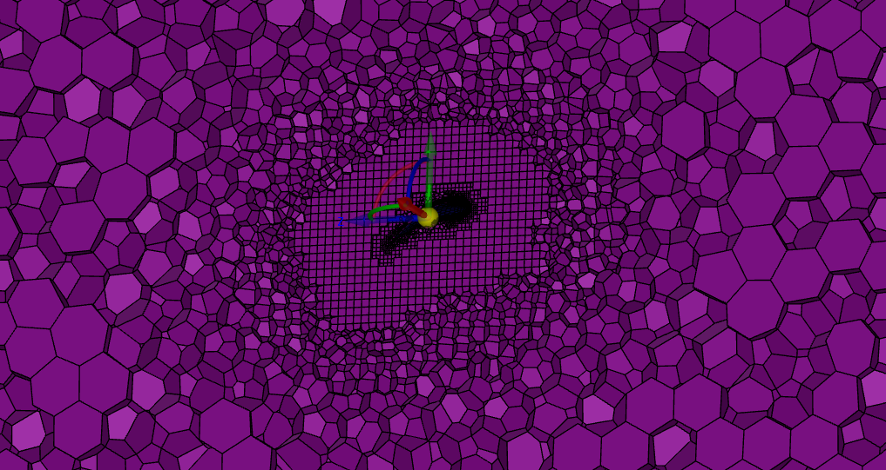
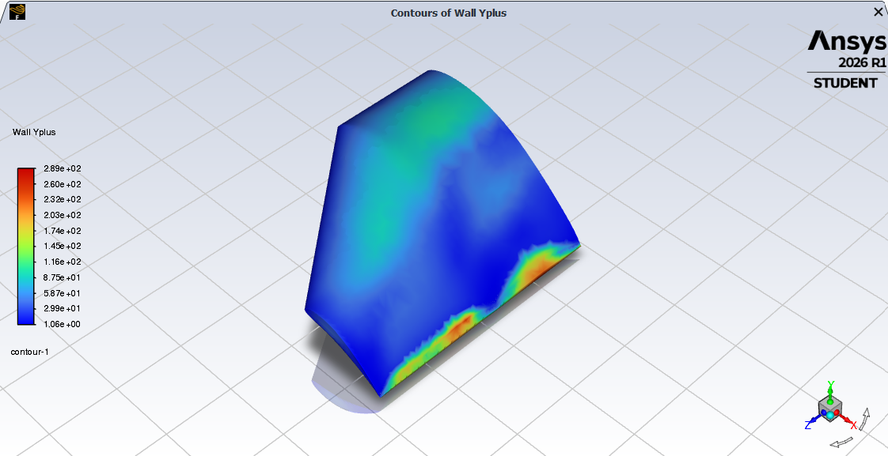

Build the numerical model
Prepared the wing geometry and half-wing symmetry domain. Generated a locally refined poly-hexcore mesh with near-wall layers and set up three-dimensional CFD in ANSYS Fluent using SST k–ω.
AERODYNAMICS / COMPUTATIONAL FLUID DYNAMICS
Investigating three-dimensional wing performance, separation, stall-related behavior and evolving vortices with steady and transient CFD.
THE ENGINEERING QUESTION
Geometric and functional requirements called for a very high-lift airfoil with relatively high thickness.
The resulting questions concerned the wing’s three-dimensional lift and drag, the development of separation and stall, and whether its separated flow and wingtip vortices would settle or remain unsteady.
XFLR5 supported preliminary aerodynamic estimates. Higher-fidelity CFD was needed to investigate the three-dimensional viscous flow and separation behind those trends.
I carried out the complete workflow, from geometry and meshing through solver setup, post-processing and engineering interpretation.
CFD METHODOLOGY
Geometry → Meshing → Solver setup → Steady CFD → Transient CFD → Post-processing → Interpretation
Prepared the wing geometry and half-wing symmetry domain. Generated a locally refined poly-hexcore mesh with near-wall layers and set up three-dimensional CFD in ANSYS Fluent using SST k–ω.
Varied speed and angle of attack, processed full-wing forces and compared lift–drag trends with XFLR5. Inspected representative flow fields to relate changes in performance to separation.
Ran transient CFD at the high-angle condition to examine the evolution of separated flow and vortical structures using velocity and Q-criterion visualizations.
MESH & NUMERICAL ASSESSMENT
Local mesh refinement and the wall y+ field provide complementary evidence of how the numerical model was assessed.

A locally refined poly-hexcore mesh concentrated resolution around the wing and near-wake region while progressively coarsening toward the far field.

Near-wall resolution was assessed using the wall y+ distribution across the wing surface. The nonuniform field was reviewed for the SST k–ω turbulence model; it does not establish a uniformly wall-resolved mesh.
STEADY-STATE FLOW RESULTS
The lower-angle view is predominantly attached; the higher-angle view shows developed recirculation. Together with the lift plateau or reduction and rising drag, this supports a stall-related interpretation of the simulated response.

Predominantly attached flow, with no broad recirculation region apparent in this view.

A developed low-speed recirculating region is visible over the wing.
Color magnitude should not be compared directly between individual flow visualizations.
AERODYNAMIC TRENDS
XFLR5 provides a lower-order reference for aerodynamic trends. CFD examines three-dimensional viscous effects and separation in greater detail, exposing a high-angle performance penalty.

CFD captures a plateau or reduction at the high-angle end of the sweep.

The drag penalty becomes more pronounced at higher angles.

The methods show similar trends before diverging in the high-lift region.

Additional angle ultimately costs efficiency without useful lift gain.
Axes are intentionally anonymized to preserve active design parameters; curve shapes are unmodified.
TRANSIENT CFD / FLOW PHYSICS
The transient study examined whether separated and vortical structures settled toward a repeatable pattern or maintained significant unsteady behavior.
Pathlines colored by speed show the development of the low-speed region and the surrounding flow. Numerical scales are omitted.
The selected isosurface highlights coherent vortical structures and their reorganization over time. Q-criterion is used to visualize vortices, not as a stall criterion.
Observation: The visualizations showed development and reorganization of the flow toward a visually settled pattern. This was treated qualitatively, rather than as proof of steady aerodynamic forces.
Loop restarts are playback transitions, not evidence of a periodic flow cycle.
DESIGN OUTCOMES
Evidence Additional angle increased drag while lift flattened or declined.
Interpretation Higher incidence could impose a drag penalty without a useful lift gain.
Decision Revised wing incidence to balance lift generation and drag during the takeoff run.
Evidence The flow visualizations revealed vortical structures around the wing.
Interpretation The wingtip flow motivated a change to the tip treatment.
Decision Incorporated endplates and selected their extent. A dedicated comparison is still needed to quantify their benefit.
Evidence CFD showed lift–drag behavior that differed from the preliminary reference.
Interpretation Takeoff estimates needed to account for the simulated aerodynamic penalty.
Decision Incorporated the wing results into the takeoff-performance model to update its aerodynamic assumptions.
ENGINEERING JUDGMENT
Selected geometry, operating conditions and performance values remain withheld. This case study presents the engineering process and qualitative findings.
Explore more work →